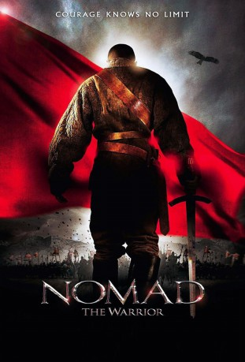

#11330 Nomad - Fürst der Steppe
Alternativ: Nomad: The Warrior (Englischer Titel)
 
 IMDB-Wertung: 6.0 / 10
IMDB-Wertung: 6.0 / 10  Metascore: 49
Metascore: 49 
Kasachstan im 18. Jahrhundert. Das Land wird bevölkert von vereinzelten kleinen Nomadenstämmen. Immer wieder kommt es zu Angriffen feindlicher Horden, die in das Land einfallen. Allein dem weisen Oraz ist bewusst, dass es sich bei einem frisch geborenen Adelsknaben um den zukünftigen Vater der Nation handelt, und so nimmt er ihn unter seine Fittiche und formt einen einmaligen Krieger aus ihm. Seine einzige Hoffnung ruht auf einer Prophezeiung. Laut dieser soll ein Krieger geboren werden, der alle Stämme vereint und das Land von seinen Feinden befreien soll...
Jahr: 2005
Dauer: 111 Minuten
FSK:
Land: Frankreich Studio: 3L FilmverleihTonspuren: DD5.1 - ,
Untertitel: Deutsch, Englisch,
Auflösung: 1080p (1920x816) Größe: 8273 MB
Genre: Drama, Krieg, Geschichte
Regisseur: Sergei Bodrov, Ivan Passer
Drehbuch: Rustam Ibragimbekov
Soundtrack: Carlo Siliotto
Darsteller:
 Kuno Becker als Mansur
Kuno Becker als Mansur- Zhansaya Saparkhanova als
 Jay Hernandez als
Jay Hernandez als  Jason Scott Lee als
Jason Scott Lee als - Doskhan Zholzhaksynov als
 Mark Dacascos als
Mark Dacascos als - Ashir Chokubayev als
- Baiten Omarov als
 Steve Blum als
Steve Blum als  Richard Epcar als
Richard Epcar als  April Hong als
April Hong als  Susan Kellermann als
Susan Kellermann als  Bai Ling als
Bai Ling als  Paul Nakauchi als
Paul Nakauchi als  Kirk Thornton als
Kirk Thornton als - Ayanat Ksenbai als
- Zhanas Iskakov als
- Almaikhan Kenzhebekova als
- Tungyshpai Zhamankulov als
- Yerik Zholzhaksynov als
- Dilnaz Akhmadieva als
- Termirkhan Tursingaliev als
- Asylbolat Ismagulov als
- Sabit Orazbaev als
- Yergali Urazimbetov als
- Vladimir Begma als
- Aziz Beyshenaliev als
- Aldabek Shalbayev als
- Shingiz Krykbaev als
- Baikenzhe Belbayev als
- Kuman Tastanbekov als
- Linda Nigmatullina als
- Dimash Rakish als
- Nurgali Nursultan als
- Kuralai Zhunisbekova als
- David Gore als
- Alex Haney als
- Dastan Shukanayev als
- Arman Zajic als
Datei: X:\2005(N-Z)\Nomad - Fürst der Steppe (2005, FSK, 1920x816).mkv seit 19.06.2019
Festplatte: HD 2005(G-Z)-2006(A-Z)
 Es gibt insgesamt 50 Filme in der Gruppe '2005(N-Z)'
Es gibt insgesamt 50 Filme in der Gruppe '2005(N-Z)'